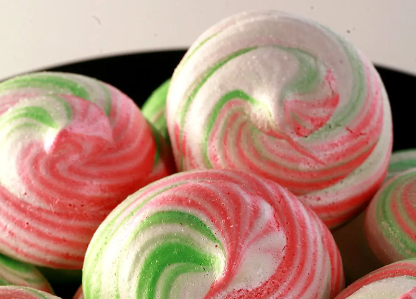

Peppermint Meringues

Are you a coookie lover? especially around the holidays? Why not create cookies that
that specifically fit the occasion? Create theses gorgous peppermint wonders that melt into your
soul. Enjoy the festivities with loved ones!
Ingredients
- 2 egg whites
- ⅛ teaspoon salt
- ⅛ teaspoon cream of tartar
- ½ cup white sugar
- 2 peppermint candy canes, crushed
- Preheat oven to 225 degrees F (110 degrees C). Line 2 cookie sheets with foil.
- In a large glass or metal mixing bowl, beat egg whites, salt,
and cream of tartar to soft peaks. Gradually add sugar,
continuing to beat until whites form stiff peaks.
Drop by spoonfuls 1 inch apart on the prepared cookie sheets.
Sprinkle crushed peppermint candy over the cookies.
- Bake for 1 1/2 hours in preheated oven.
Meringues should be completely dry on the inside.
Do not allow them to brown. Turn off oven. Keep oven door ajar,
and let meringues sit in the oven until completely cool.
Loosen from foil with metal spatula.
Store loosely covered in cool dry place for up to 2 months.